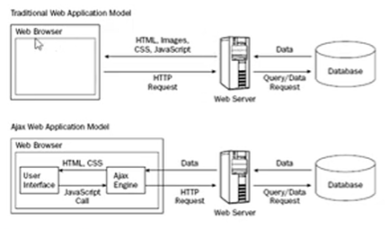

AJAX: Asynchronous JavaScript and XML
AjAX significa Asyncronous JavaScript & XML
En pocas palabras, es el uso del objeto XMLHttpRequest para comunicarse con los servidores
Puede enviar y recibir información en varios formatos: JSONXMLHTML y Archivos de texto

Modelo Web Traidicional vs Modelo Web AJAX
Flujo del Modelo Tradicional- El usuario reraliza una acción
- El navegador envía una petición HTTP completa al sservidor
- El servidor consulta una base de datos
- El servidor responde enviando: HTML, CSS, JS, Imágenes
- La página se recarga complertamente
Flujo del Modelo AJAX
- El usuario interactua con la interfaz
- JavaScript (AJAX Engine) intercepta la acción
- Se envía una petición HTTP en segundo plano
- El servidor responde solo con datos (Normalmente JSON)
- No e recarga la página completa
¿Qué es el AJAX engine? Es simplemente JavaScript usando fetch(), XMLHttpRequest() y asnc/await
El atractivo de AJAX es su naturaleza asíncrona, lo que significa que puede comunicarse con el servidor, intercambiar datos y actualizar la página sin tener que recargar el navegador
Métodos nativos
-
ActiveXObject (Solo para IE8 e inferiores)
-
XMLHttpRequest (Para el resto de los navegadores)
-
API Fetch
Librerías Externas
-
jQuery.ajax()
Recordemos que JQuery era usado para detectar el tipo de navegador de usuario para la ejecución de su código adaptativo -
Axios
Es la librería popular por estar basada en promesas Es un cliente de peticiones HTTP tanto para el navegador como NODE -
etc.
- HTML y CSS, para crear una presentación basada en estándares.
- DOM, para la interacción y manipulación dinámica de la presentación.
- HTML, XML y JSON, para el intercambio y la manipulación de información.
- XMLHttpRequest o Fetch, para el intercambio asíncrono de información.
- JavaScript, para unir todas las demás tecnologías.
-
Estado de la Petición
- READY_STATE_UNINITIALIZED = 0 (No inicializado)
- READY_STATE_LOADING = 1 ()
- READY_STATE_LOADED = 2 ()
- READY_STATE_INTERACTIVE = 3 ()
- READY_STATE_COMPLETE = 4 (Cuando el servidor responde y usemos la información)
-
Códigos de
estado de respuesta HTTP
- Respuestas Informativas (100 - 199)
- Respuestas Satisfactorias o ÉXITO(200 - 299)
- Redirecciones (300 - 399)
- Errores de los clientes (400 - 499)
- Errores del Servidor (500)
En esta categoría entran los errores: URL incorrecta (404), JSON mal estructurado, Falta Token, Falta campo obligatorio,
En esta otra Errores de base de datos, Excepción del Backend, Servidor Saturado, TimeOut interno
async function obtenerDatos() { const response = await fetch("https://api.com/datos"); if (!response.ok) { if (response.status >= 400 && response.status < 500) { console.log("Error del cliente:", response.status); } else if (response.status >= 500) { console.log("Error del servidor:", response.status); } return; } const data = await response.json(); console.log(data); //api.github.com/users/arturo-chi -------> Api de github para usuarios }
OTROS RECURSOS
cdnjsEn esta sección veremos los 2 objetos nativos y AXIOS